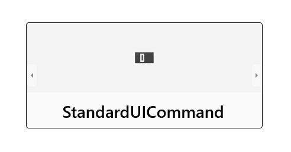

Flip view
Use a flip view for browsing images or other items in a collection, such as photos in an album or items in a product details page, one item at a time. For touch devices, swiping across an item moves through the collection. For a mouse, navigation buttons appear on mouse hover. For a keyboard, arrow keys move through the collection.
Is this the right control?
Flip view is best for perusing images in small to medium collections (up to 25 or so items). Examples of such collections include items in a product details page or photos in a photo album. Although we don't recommend flip view for most large collections, the control is common for viewing individual images in a photo album.
Recommendations
- Flip views work best for collections of up to 25 or so items.
- Avoid using a flip view control for larger collections, as the repetitive motion of flipping through each item can be tedious. An exception would be for photo albums, which often have hundreds or thousands of images. Photo albums almost always switch to a flip view once a photo has been selected in the grid view layout. For other large collections, consider a List view or grid view.
Globalization and localization checklist
- Bi-directional considerations: Use standard mirroring for RTL languages. The back and forward controls should be based on the language's direction, so for RTL languages, the right button should navigate backwards and the left button should navigate forward.
Examples
Horizontal browsing, starting at the left-most item and flipping right, is the typical layout for a flip view. This layout works well in either portrait or landscape orientation on all devices:

A flip view can also be browsed vertically:

Create a flip view
- Important APIs: FlipView class, ItemsSource property, ItemTemplate property
The WinUI 3 Gallery app includes interactive examples of most WinUI 3 controls, features, and functionality. Get the app from the Microsoft Store or get the source code on GitHub
FlipView is an ItemsControl, so it can contain a collection of items of any type. To populate the view, add items to the Items collection, or set the ItemsSource property to a data source.
By default, a data item is displayed in the flip view as the string representation of the data object it's bound to. To specify exactly how items in the flip view are displayed, you create a DataTemplate to define the layout of controls used to display an individual item. The controls in the layout can be bound to properties of a data object, or have content defined inline. You assign the DataTemplate to the ItemTemplate property of the FlipView.
Add items to the Items collection
You can add items to the Items collection using XAML or code. You typically add items this way if you have a small number of items that don't change and are easily defined in XAML, or if you generate the items in code at run time. Here's a flip view with items defined inline.
<FlipView x:Name="flipView1">
<Image Source="Assets/Logo.png" />
<Image Source="Assets/SplashScreen.png" />
<Image Source="Assets/SmallLogo.png" />
</FlipView>
// Create a new flip view, add content,
// and add a SelectionChanged event handler.
FlipView flipView1 = new FlipView();
flipView1.Items.Add("Item 1");
flipView1.Items.Add("Item 2");
// Add the flip view to a parent container in the visual tree.
stackPanel1.Children.Add(flipView1);
When you add items to a flip view they are automatically placed in a FlipViewItem container. To change how an item is displayed you can apply a style to the item container by setting the ItemContainerStyle property.
When you define the items in XAML, they are automatically added to the Items collection.
Set the items source
You typically use a flip view to display data from a source such as a database or the Internet. To populate a flip view from a data source, you set its ItemsSource property to a collection of data items.
Here, the flip view's ItemsSource is set in code directly to an instance of a collection.
// Data source.
List<String> itemsList = new List<string>();
itemsList.Add("Item 1");
itemsList.Add("Item 2");
// Create a new flip view, add content,
// and add a SelectionChanged event handler.
FlipView flipView1 = new FlipView();
flipView1.ItemsSource = itemsList;
flipView1.SelectionChanged += FlipView_SelectionChanged;
// Add the flip view to a parent container in the visual tree.
stackPanel1.Children.Add(flipView1);
You can also bind the ItemsSource property to a collection in XAML. For more info, see Data binding with XAML.
Here, the ItemsSource is bound to a CollectionViewSource named itemsViewSource.
<Page.Resources>
<!-- Collection of items displayed by this page -->
<CollectionViewSource x:Name="itemsViewSource" Source="{Binding Items}"/>
</Page.Resources>
...
<FlipView x:Name="itemFlipView"
ItemsSource="{Binding Source={StaticResource itemsViewSource}}"/>
Caution
You can populate a flip view either by adding items to its Items collection, or by setting its ItemsSource property, but you can't use both ways at the same time. If you set the ItemsSource property and you add an item in XAML, the added item is ignored. If you set the ItemsSource property and you add an item to the Items collection in code, an exception is thrown.
Specify the look of the items
By default, a data item is displayed in the flip view as the string representation of the data object it's bound to. You typically want to show a more rich presentation of your data. To specify exactly how items in the flip view are displayed, you create a DataTemplate. The XAML in the DataTemplate defines the layout and appearance of controls used to display an individual item. The controls in the layout can be bound to properties of a data object, or have content defined inline. The DataTemplate is assigned to the ItemTemplate property of the FlipView control.
In this example, the ItemTemplate of a FlipView is defined inline. An overlay is added to the image to display the image name.
<FlipView MaxWidth="400" Height="180" BorderBrush="Black" BorderThickness="1"
ItemsSource="{x:Bind Items, Mode=OneWay}">
<FlipView.ItemTemplate>
<DataTemplate x:DataType="data:ControlInfoDataItem">
<Grid>
<Grid.RowDefinitions>
<RowDefinition Height="*" />
<RowDefinition Height="Auto" />
</Grid.RowDefinitions>
<Image Width="36" Source="{x:Bind ImagePath}" Stretch="Uniform"
VerticalAlignment="Center" />
<Border Background="#A5FFFFFF" Height="60" Grid.Row="1">
<TextBlock x:Name="Control2Text" Text="{x:Bind Title}" Foreground="Black"
Padding="12,12" Style="{StaticResource TitleTextBlockStyle}"
HorizontalAlignment="Center" />
</Border>
</Grid>
</DataTemplate>
</FlipView.ItemTemplate>
</FlipView>
Here's what the layout defined by the data template looks like.

Set the orientation of the flip view
By default, the flip view flips horizontally. To make the it flip vertically, use a stack panel with a vertical orientation as the flip view's ItemsPanel.
This example shows how to use a stack panel with a vertical orientation as the ItemsPanel of a FlipView.
<FlipView x:Name="flipViewVertical" Width="480" Height="270"
BorderBrush="Black" BorderThickness="1">
<!-- Use a vertical stack panel for vertical flipping. -->
<FlipView.ItemsPanel>
<ItemsPanelTemplate>
<VirtualizingStackPanel Orientation="Vertical"/>
</ItemsPanelTemplate>
</FlipView.ItemsPanel>
<FlipView.ItemTemplate>
<DataTemplate>
<Grid>
<Image Width="480" Height="270" Stretch="UniformToFill"
Source="{Binding Image}"/>
<Border Background="#A5000000" Height="80" VerticalAlignment="Bottom">
<TextBlock Text="{Binding Name}"
FontFamily="Segoe UI" FontSize="26.667"
Foreground="#CCFFFFFF" Padding="15,20"/>
</Border>
</Grid>
</DataTemplate>
</FlipView.ItemTemplate>
</FlipView>
Here's what the flip view looks like with a vertical orientation.
Adding a context indicator
Use a context indicator (such as a PipsPager or film strip) with a flip view to help provide users with a point of reference within the content.
The following image shows a PipsPager used with a small photo gallery (we recommend centering the PipsPager below the gallery).

This code snippet shows how to bind a PipsPager with a FlipView.
<StackPanel>
<FlipView x:Name="Gallery" MaxWidth="400" Height="270" ItemsSource="{x:Bind Pictures}">
<FlipView.ItemTemplate>
<DataTemplate x:DataType="x:String">
<Image Source="{x:Bind Mode=OneWay}"/>
</DataTemplate>
</FlipView.ItemTemplate>
</FlipView>
<!-- The SelectedPageIndex is bound to the FlipView to keep the two in sync -->
<PipsPager x:Name="FlipViewPipsPager"
HorizontalAlignment="Center"
Margin="0, 10, 0, 0"
NumberOfPages="{x:Bind Pictures.Count}"
SelectedPageIndex="{x:Bind Path=Gallery.SelectedIndex, Mode=TwoWay}" />
</StackPanel>
For larger collections (10 or more items), we highly recommend using a contextual indicator such as a film strip of thumbnails. Unlike a PipsPager that uses simple dots or glyphs, each thumbnail in the film strip shows a smaller, selectable version of the corresponding image.
For a full example showing how to add a context indicator to a FlipView, see XAML FlipView sample.
UWP and WinUI 2
Important
The information and examples in this article are optimized for apps that use the Windows App SDK and WinUI 3, but are generally applicable to UWP apps that use WinUI 2. See the UWP API reference for platform specific information and examples.
This section contains information you need to use the control in a UWP or WinUI 2 app.
APIs for this control exist in the Windows.UI.Xaml.Controls namespace.
- UWP APIs: FlipView class, ItemsSource property, ItemTemplate property
- Open the WinUI 2 Gallery app and see the FlipView in action. The WinUI 2 Gallery app includes interactive examples of most WinUI 2 controls, features, and functionality. Get the app from the Microsoft Store or get the source code on GitHub.
We recommend using the latest WinUI 2 to get the most current styles and templates for all controls. WinUI 2.2 or later includes a new template for this control that uses rounded corners. For more info, see Corner radius.